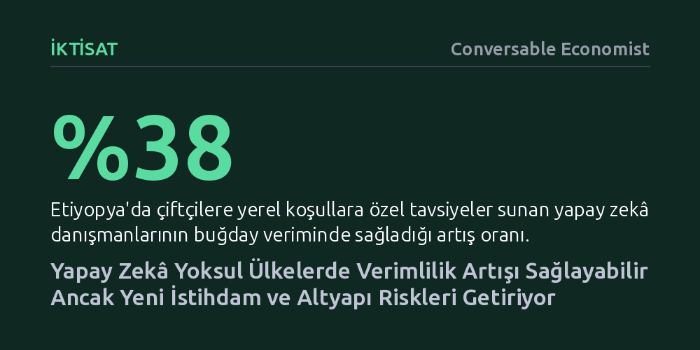

IKTISAT · Conversable Economist · 2026-10-24
Yapay zekâ, tarımsal verimi yüzde 38’e kadar artırıp kritik görevleri daha az uzman personele devrederek yoksul ülkelerde kalkınmayı hızlandırabilir. Ancak bu potansiyel altyapı yatırımlarına bağlıyken çağrı merkezleri gibi sektörlerde ciddi istihdam kayıpları yaratabilir.
Zengin ülkelerde insan yaratıcılığının kaybı üzerinden tartışılan yapay zekâ, yoksul ekonomilerde yetersiz uzman açığını kapatıp açlıkla mücadeleye katkı sunarak kalkınmanın belirleyici aracına dönüşüyor.

Gelişmiş ülkelerdeki akademi ve kamuoyu çevrelerinde yapay zekâ tartışmaları çoğunlukla telif hakları, akademik dürüstlük veya edebi metinlerin yazımı gibi alanlara odaklanıyor. Bu eksendeki temel endişe, yapay zekâ kullanımının insana özgü, paha biçilemez ve tarif edilemez yaratıcı değerlerin kaybına yol açacağı korkusundan besleniyor.
Oysa Dünya Bankası’nın 2026 Dünya Kalkınma Raporu, yapay zekânın düşük gelirli gelişmekte olan ekonomilerdeki olası kazanımlarının ve ödünleşimlerinin çok daha farklı bir zeminde durduğunu hatırlatıyor. En yakın köyde sadece bir akıllı telefona erişimi olan bir çiftçinin, yerel arazi ve hava koşullarını yapay zekâya sorabilmesi ve ürün fotoğraflarını göndererek tavsiye alabilmesi, soyut bir kaygı değil; o yıl yaşanacak aşırı yoksulluk ile yetersiz beslenme arasındaki ince çizgiyi belirleyen hayati bir imkândır.
Rapor, yapay zekânın gelişmekte olan ülkelerdeki bilişsel meslekleri dönüştürme potansiyelini üç temel mekanizmayla açıklıyor. İlk olarak yapay zekâ, müşteri desteği, profesyonel yazarlık ve yazılım geliştirme gibi alanlarda çalışanların beceri düzeylerini yukarı çekerek deneyim farklarını dengeliyor ve daha az tecrübeli iş gücünün hızla yetkinleşmesini sağlıyor.
İkinci ve kalkınma açısından belki de en dönüştürücü mekanizma, yüksek uzmanlık gerektiren bilişsel görevlerin daha az uzmanlaşmış çalışanlara devredilebilmesidir. Örneğin, uzman hekim sayısının son derece kısıtlı olduğu coğrafyalarda tıbbi görüntülerin taranması ve ön teşhis konması görevi, yapay zekâ desteği sayesinde temel sağlık çalışanlarına aktarılabiliyor. Böylece kritik sağlık hizmetleri toplumun en alt kesimlerine kadar ulaştırılabiliyor.
Üçüncü olarak yapay zekâ, çalışanların mevcut işlerindeki üretkenliğini doğrudan artırıyor. Nitelikli öğretmen yetersizliğinin kronik bir sorun olduğu okullarda üretici yapay zekâ araçları devreye giriyor. Bu araçlar; öğretmenlere ders planlamasında destek vererek, öğrencilerin bireysel beceri düzeylerine uygun öğrenme materyalleri üreterek ve öğrenci çalışmalarına anında geri bildirim sağlayarak eğitim kalitesini yukarı taşıyor.
Yapay zekânın sunduğu bu faydalar yalnızca teorik birer beklentiden ibaret değil. Etiyopya’da çiftçilere yerel koşullara göre özelleştirilmiş tavsiyeler sunan yapay zekâ danışmanlarıyla gerçekleştirilen bir saha deneyi, buğday veriminde yüzde 38 gibi çarpıcı bir artış sağlandığını ortaya koyuyor. Küçük ölçekli üreticiler için böylesi bir artış, hanelerin doğrudan gıda güvencesine kavuşması anlamına geliyor.
Buna karşılık Dünya Kalkınma Raporu madalyonun karanlık yüzünü ve karşılaşılacak pratik riskleri de açıkça teslim ediyor. Yapay zekâ, düşük gelirli ülkelerde ekonomik kalkınmanın ve döviz girdisinin önemli ayaklarından birini oluşturan kimi sektörleri ciddi biçimde sarsacak. Özellikle yapay zekâ ajanlarının hızla gelişmesi, gelişmekte olan ülkelerde yüz binlerce gence istihdam sağlayan çağrı merkezlerindeki çalışanların önemli bir kısmını işsiz bırakma potansiyeli taşıyor.
Yapay zekânın bir mucize gibi görülmesi yanıltıcıdır; çünkü bu teknolojiden fayda sağlayabilmek hem fiziksel hem de beşeri altyapıya yapılacak tamamlayıcı yatırımları zorunlu kılıyor. Elektrik şebekesi, internet erişimi ve temel dijital cihazlar bulunmadan yapay zekânın kalkınma getirmesi mümkün olmadığı gibi, bu durum mevcut eşitsizlikleri daha da derinleştirebilir.
Öte yandan düşük gelirli ülkelerin, mevcut açık kaynaklı yapay zekâ araçlarını kendi yerel dillerine, kültürel bağlamlarına ve ihtiyaçlarına göre uyarlayacak kurumsal süreçler geliştirmesi gerekiyor. Okullarda yapay zekâ kullanımı iki ucu keskin bir bıçak olsa da öğretmen açığı olan yerlerde kişiselleştirilmiş özel ders olanakları kritik bir değer taşıyor. Bu nedenle ülkelerin hangi yapay zekâ araçlarının güvenilir olduğunu belirleyen yerel sertifikasyon ve denetim mekanizmalarını vakit kaybetmeden inşa etmesi gerekiyor.